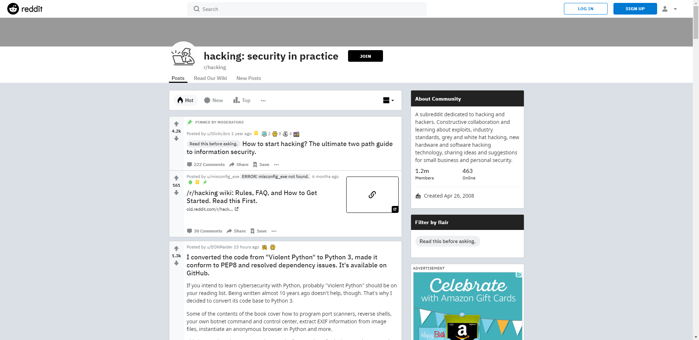

Section 4 - The Ease and Openness of Google
Freddie P
The podcast below is a discussion about the openness of google with regards to the ease of access to hacking materials. The focus of this podcast is on the easiness to search for materials and then moves onto Reddit, a forum style social media platform, which has many self-registered communities for users to join. I explore in more depth the specific side of Reddit which is used by hackers in order to learn new skills and discover new techniques for ‘ethical’ purposes.
ANNOTATED BIBLIOGRAPHY
Petrov, C., 2020. 70+ Google Statistics That Show How Big It Actually Is In 2020. [online] TechJury. Available at: https://techjury.net/blog/google-search-statistics [Accessed 10 June 2020]. This publication is extremely up-to-date, having been published the same date as it was accessed. TechJury is an independent blog site for technology in businesses. Although his source for the data is unknow it can likely be trusted
Redditinc.com. 2019. Press - Reddit. [online] Available at: https://www.redditinc.com/press [Accessed 12 June 2020]. This is recently published, within a year, so therefore is an up-to-date source and can be used to express current figures. The source is from Reddit themselves so may be biased to paint the company in a better light, however, after consideration, there seems to be no potential gain to the company to create fake figures.
Reddit.com. 2020. Hacking: Security In Practice. [online] Available at: https://www.reddit.com/r/hacking/ [Accessed 10 June 2020]. This source is the same publisher as the source above and was only used for information about this page so is reliable.
COMMENTS
Millie W: If you believe that some people will be using this information to hack for bad reasons, what would your proposal be to stop this? Many people call for the banning of publishing of information like this, but this presents a problem: people will always conduct activities like hacking, so they would continue to teach this to others, perhaps on the dark web? Isn't it better for this information to be kept on the open web, where it can be monitored and screened, rather than forcing those interested in hacking to look on the dark web, and perhaps get involved in criminal activity?
Freddie P: Although the problem raised here involves censorship to all content, I propose that only the more detailed content explaining how to guides is limited, not entirely removed, and to gain access to this there must be some verification process. For example, even just a basic age verification process could suffice as it means that children would actively have to look for this content and this may prevent curious minds from exploring such sites, with regards to your point on the dark web, the access may be made more difficult if it isn’t as easy to find the systems required to access it.